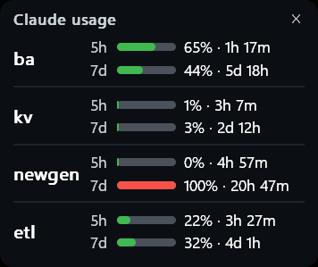

One small card on your Windows desktop showing the 5-hour and weekly limits of all your Claude accounts, with reset countdowns. No more logging in and out to check.

Short labels, the way you'd say them. The first one is the account you're already logged in with in Claude Code.
Open Windows PowerShell (Start menu, type "PowerShell"), paste this and press Enter. You don't need Git or anything else first.
What it does, in order. It's safe to run again: it skips anything already done.
For each account that isn't logged in yet, the installer pauses and does this:
Reading the card: each row shows % used · time until reset.
On the card: drag to move it, double-click for the full dashboard, ✕ then "Close usage widget" to close it. Reopen it with the Claude Usage shortcut.
From the install folder (%USERPROFILE%\claude-usage-monitor), with just installed:
just statusjust claude kvjust login kvjust accounts a,b,cjust verifyjust start / stopjust startup-offstartup-on to undo).just setupNo just? Run powershell -ExecutionPolicy Bypass -File .\setup.ps1 in that folder instead.
Run just login <name> and sign in with the right email in the fresh window. The new login replaces the wrong one.
That account has used its whole weekly allowance. The countdown next to it is when it resets. Switch to an account with a green bar: just claude <name>.
Logins renew themselves. If one hasn't, run just login <name>, then just verify.
Use the command from step 2 exactly as shown. It runs through irm … | iex, which isn't blocked. For local files, use powershell -ExecutionPolicy Bypass -File .\setup.ps1.
Right-click the card, open Settings, pick the Classic theme. just theme brings the multi-account card back.
Only in each account's own folder on your PC (~\.claude, ~\.claude-<name>), the same place Claude Code keeps them. This kit never reads, copies or uploads them. The widget reads them locally to ask Anthropic for usage, and sends them nowhere else.